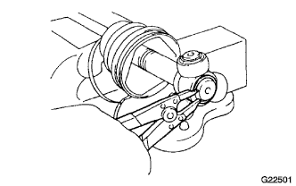

FRONT DRIVE SHAFT ASSEMBLY > DISASSEMBLY |
| 1. REMOVE FRONT NO. 2 AXLE INBOARD JOINT BOOT CLAMP |
Hold the drive shaft lightly in a vise between aluminum plates.
Using pliers, remove the front No. 2 axle inboard joint boot clamp as shown in the illustration.
| 2. REMOVE FRONT NO. 1 AXLE INBOARD JOINT BOOT CLAMP |
Remove the front axle inboard joint boot clamp.
| 3. REMOVE FRONT AXLE INBOARD JOINT BOOT |
| 4. REMOVE FRONT AXLE INBOARD JOINT ASSEMBLY |
Place matchmarks on the inboard and outboard joint.
| *1 | Matchmark |
Remove the inboard joint from the outboard joint.
|  |
Using a snap ring expander, remove the snap ring.
 |
Place matchmarks on the outboard joint and tripod.
| *1 | Matchmark |
Using a brass bar and hammer, remove the tripod from the outboard joint.
| 5. REMOVE FRONT NO. 2 AXLE OUTBOARD JOINT BOOT CLAMP |
 |
Using a screwdriver, remove the outboard joint boot clamp.
| 6. REMOVE FRONT NO. 1 AXLE OUTBOARD JOINT BOOT CLAMP |
 |
Using pliers, remove the boot clamp as shown in the illustration.
| 7. REMOVE OUTBOARD JOINT BOOT |
| 8. REMOVE SHAFT SNAP RING |
 |
Using a screwdriver, remove the shaft snap ring.
| 9. REMOVE FRONT DRIVE SHAFT DUST COVER |
Using SST and a press, remove the dust cover.
| 10. REMOVE FRONT AXLE HUB DUST SEAL |
 |
Using a screwdriver and hammer, remove the dust seal.